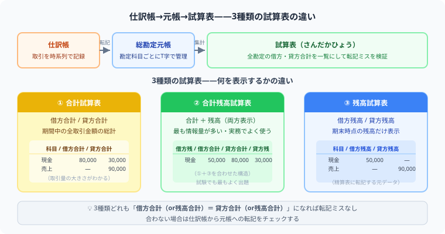

「仕訳は合っているのに、答案用紙の形式を間違えて0点」——試算表で一番やりがちなミスです。
3種類の試算表は答案用紙を見た瞬間に「合計欄か残高欄か」を判断できれば怖くありません。この記事で違いを整理しましょう。

試算表を理解する前に、取引を記録する2つの主要簿を知っておきましょう。
仕訳帳の取引1行を、対応する2つの元帳ページへ転記します。
試算表は「転記が正確に行われているか」を検証するための一覧表です。仕訳帳に書かれた仕訳を総勘定元帳へ転記（科目別に写す作業）した後、全科目の残高を一覧化して借方合計と貸方合計が一致するか確認します。
試算表は決算プロセスのインプットとして使われます。決算の全体像を先に把握しておきましょう。
以下の3種類の表はすべて同じ仕訳データから作成しています。
| 勘定科目 | 借方合計 | 貸方合計 | 残高（借方） | 残高（貸方） |
|---|---|---|---|---|
| 現金 | 272,000 | 144,000 | 128,000 | — |
| 売掛金 | 100,000 | 40,000 | 60,000 | — |
| 備品 | 200,000 | — | 200,000 | — |
| 買掛金 | 30,000 | 80,000 | — | 50,000 |
| 借入金 | — | 200,000 | — | 200,000 |
| 資本金 | — | 60,000 | — | 60,000 |
| 売上 | — | 300,000 | — | 300,000 |
| 仕入 | 162,000 | — | 162,000 | — |
| 給料 | 60,000 | — | 60,000 | — |
| 合 計 | 824,000 | 824,000 | 610,000 | 610,000 |
各勘定の借方合計・貸方合計を両方の列に記入します。残高は記入しません。
| 借方合計 | 勘定科目 | 貸方合計 |
|---|---|---|
| 272,000 | 現金 | 144,000 |
| 100,000 | 売掛金 | 40,000 |
| 200,000 | 備品 | — |
| 30,000 | 買掛金 | 80,000 |
| — | 借入金 | 200,000 |
| — | 資本金 | 60,000 |
| — | 売上 | 300,000 |
| 162,000 | 仕入 | — |
| 60,000 | 給料 | — |
| 824,000 | 合 計 | 824,000 |
合計欄と残高欄の両方を記入します。まず合計欄を埋め、次に差額で残高欄を計算するのが解く順番のコツです。
| 残高 | 合計 | 勘定科目 | 合計 | 残高 |
|---|---|---|---|---|
| （借方） | （借方） | （貸方） | （貸方） | |
| 128,000 | 272,000 | 現金 | 144,000 | — |
| 60,000 | 100,000 | 売掛金 | 40,000 | — |
| 200,000 | 200,000 | 備品 | — | — |
| — | 30,000 | 買掛金 | 80,000 | 50,000 |
| — | — | 借入金 | 200,000 | 200,000 |
| — | — | 資本金 | 60,000 | 60,000 |
| — | — | 売上 | 300,000 | 300,000 |
| 162,000 | 162,000 | 仕入 | — | — |
| 60,000 | 60,000 | 給料 | — | — |
| 610,000 | 824,000 | 合 計 | 824,000 | 610,000 |
各勘定の差引残高のみを、借方か貸方どちらか一方に記入します。同じ勘定科目で借方と貸方の両方に金額を書くことはありません。
| 借方残高 | 勘定科目 | 貸方残高 |
|---|---|---|
| 128,000 | 現金 | — |
| 60,000 | 売掛金 | — |
| 200,000 | 備品 | — |
| — | 買掛金 | 50,000 |
| — | 借入金 | 200,000 |
| — | 資本金 | 60,000 |
| — | 売上 | 300,000 |
| 162,000 | 仕入 | — |
| 60,000 | 給料 | — |
| 610,000 | 合 計 | 610,000 |
合計試算表は各勘定の借方合計・貸方合計を集計した表です。残高試算表は差額（残高）だけを集計した表です。合計残高試算表は両方を合わせたもので、3種類とも試験範囲です。
複式簿記では必ず借方と貸方が同額で記録されるため、全取引を集計した試算表では借方合計と貸方合計が必ず一致します。一致しない場合は転記ミスや計算間違いがあります。
試算表は帳簿の記録を確認するための表です。精算表は決算整理を行いP/L・B/Sを作成するための作業表です。試算表を精算表のインプット（残高試算表欄）として使います。